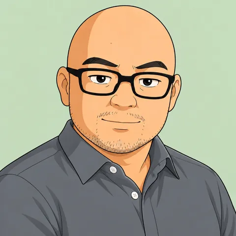

事例 01 小さなミスを、加工の前に見つける
※ 内容は簡略化して紹介しています。
確認に追われる時間を、減らしたい。
問題
- プログラムは、直しが重なるほど、確認に時間がかかる
- 小数点がひとつ抜けるような小さなミスは、見落としやすい
解決
- 「どこを見れば、ミスに気づけるか」を整理して、確認のやり方を見直した
- 小さな見落としに、加工へ入る前の段階で気づけるようにした
現場で取り組んだ改善です。
※ 内容は簡略化して紹介しています。
確認に追われる時間を、減らしたい。
事例02は実務経験にもとづく目安で、効果は条件によって異なります。
フォームから、困っていることを一言で送ってください。
現場の状況や、どうなったら嬉しいかを一緒に整理します。
できること・できないことをお伝えしたうえで、進め方を相談します。費用が発生する場合は、事前にご案内し、ご納得いただいてから進めます。

生産技術・機械加工プログラマーの経験
そーりぃ（Soorii）
製造の現場で20年以上。NC旋盤・ターニングセンター・マシニングセンタなどの操作に携わり、その後は生産技術として、工程・加工条件の見直しや治具設計に取り組んできました。
NC旋盤での加工方法や工程の見直し、NCプログラム、治具、図面の作成・修正、NCプログラムの確認の工夫などです。
はい、大丈夫です。「うまく言葉にできない」という段階でも、まずは状況を教えてください。
業務改善のご相談
小さな困りごとでも、お気軽にどうぞ。
相談フォームを開く Googleフォームが別のタブで開きます相談フォームは Google フォームを利用しています。ご入力いただいた内容は、ご相談への返信のみに使います。機密情報・図面・品番などは、ご記入にならないようお願いします。